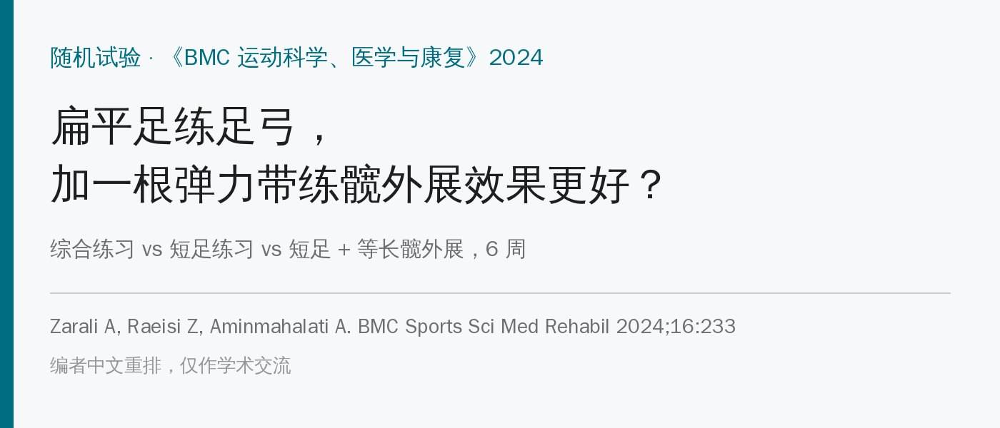
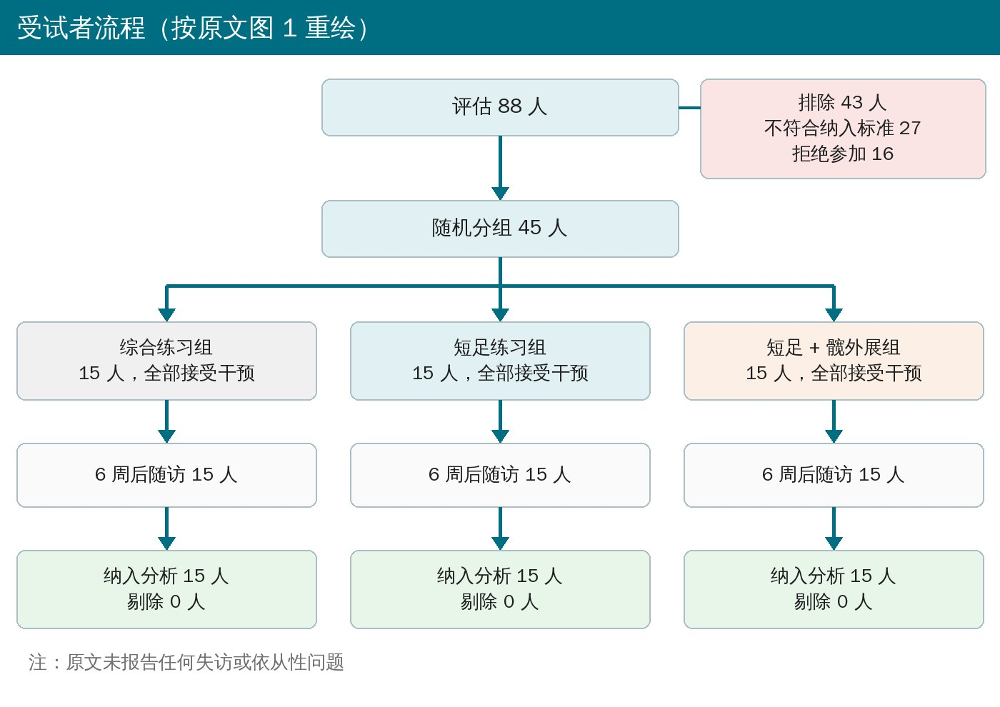
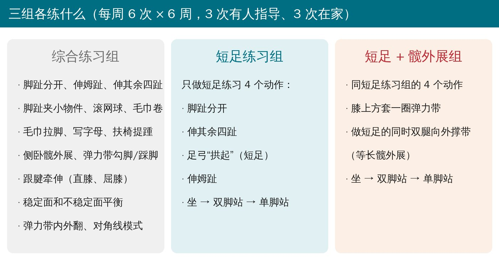
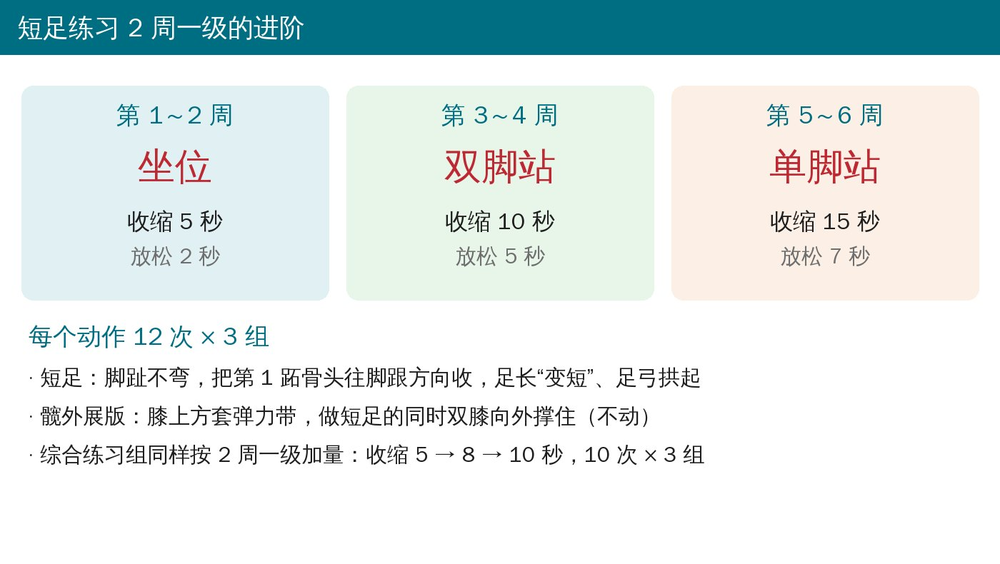
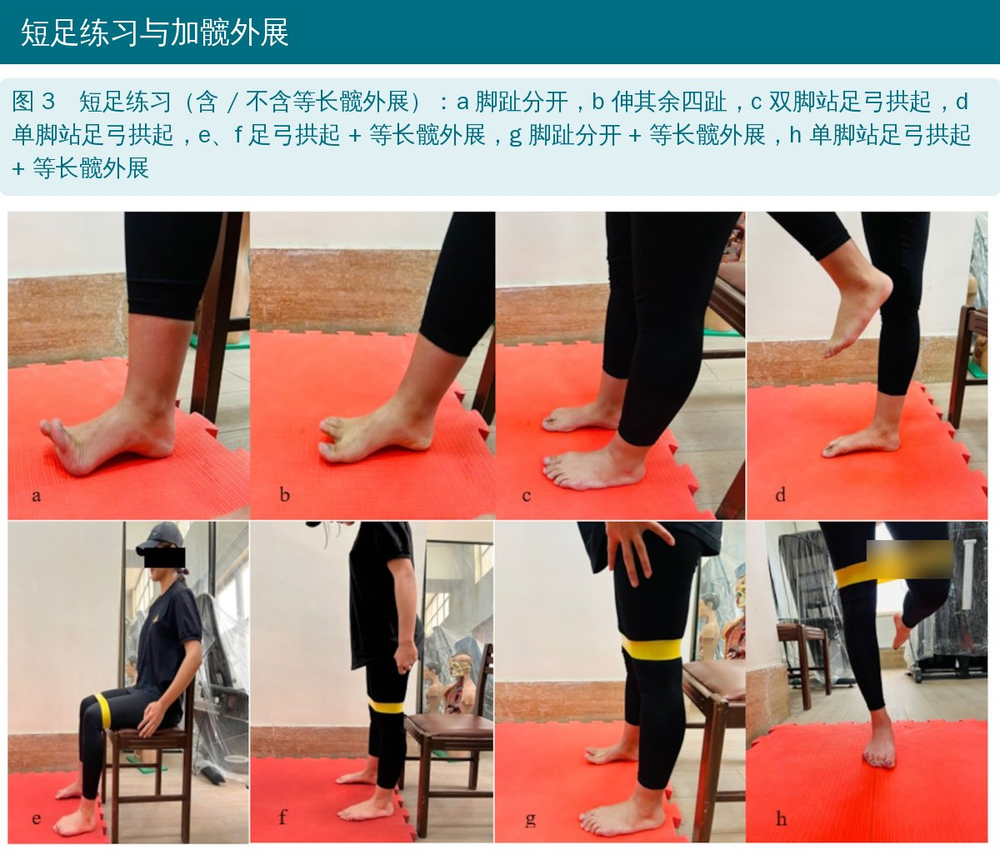
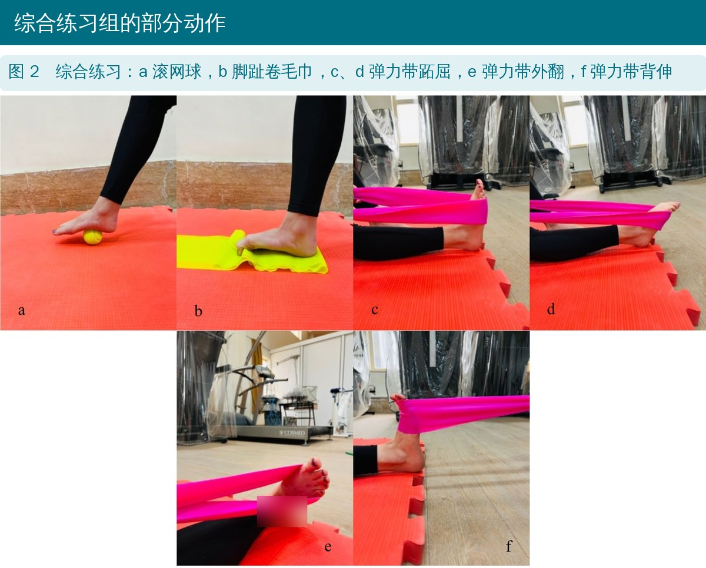
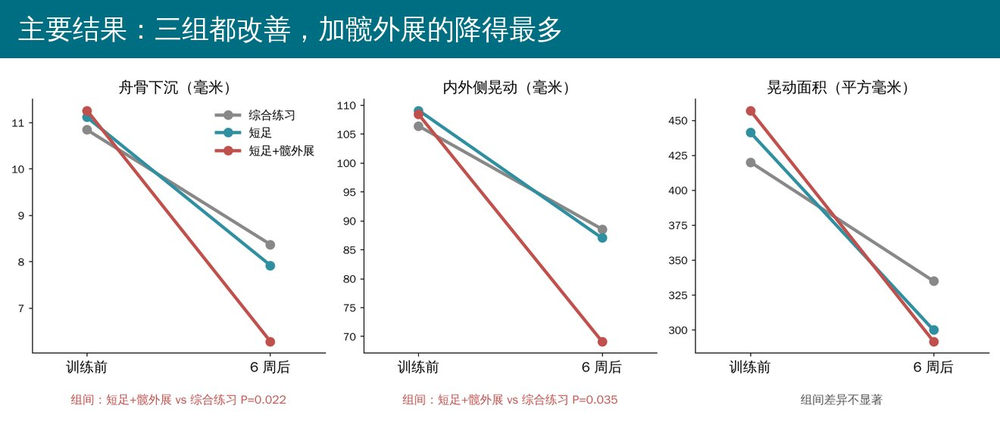

🔖原文信息（编者中文重排）
📚 文献信息
▪ Zarali A, Raeisi Z, Aminmahalati A. The effects of combined exercises, short foot exercises, and short foot exercises with isometric hip abduction on navicular drop, static parameters, and postural sway in women with flat foot: a randomized trial. BMC Sports Sci Med Rehabil. 2024;16:233.
▪ 作者来自伊朗阿拉克大学运动康复系
▪ 随机、单盲试验，伊朗临床试验注册号 IRCT20220409054456N
柔韧性扁平足：站着时内侧纵弓塌下来、坐着又能恢复。它会让足过度旋前，和足底筋膜炎、姆外翻、髌股痛、腰痛等都有关系，平衡也更差。
短足练习是练足内在肌的经典动作：脚趾不弯，把第 1 跖骨头往脚跟方向收，让足弓拱起来。扁平足的人姆展肌往往偏弱，做短足时胫前肌容易代偿。Choi 等的肌电研究发现，做短足时膝上套弹力带、同时向外撑（等长髋外展），胫前肌代偿更少、姆展肌激活更多。这篇就是把这个“即时效果”做成 6 周训练，看是不是更有用。
• 对象：45 名女大学生，18～28 岁，体重指数 18～25，舟骨下沉 > 10 毫米（柔韧性扁平足），近半年无下肢或腰部损伤
• 随机分三组，每组 15 人；评估者和数据分析者不知道分组
• 三组都是每周 6 次 × 6 周（3 次有治疗师指导、3 次在家按指导单自己练），每 2 周升一级，每次约 30 分钟逐渐加到 45 分钟
• 测量（只测优势脚）：舟骨下沉（Brody 法，坐位和站立位舟骨结节高度差）；足底压力板上单腿站 30 秒，记录足底接触面积、足轴旋转角、最大压力，以及压力中心的前后、内外侧晃动、轨迹长度、晃动面积和平均速度

🔖受试者流程

🔖三组对比
4 个动作：脚趾分开、伸其余四趾、足弓拱起（短足）、伸姆趾。每 2 周换体位、加时间：

🔖进阶
• 在膝关节上方套一圈弹力带
• 做每个短足动作时，双膝同时向外撑住弹力带，但不真正移动（等长髋外展）
• 同样从坐位 → 双脚站 → 单脚站（单脚站时套带的那条腿抬起，支撑腿做短足）

🔖原文图 3
按 2 周一档换动作（详见文末附录表 1），每个动作 10 次 × 3 组，收缩时间 5 → 8 → 10 秒：
• 第 1～2 周：脚趾分开、伸姆趾、伸其余四趾；脚趾夹小物件；滚网球；毛巾套脚跟往回拉；用脚写字母；扶椅背单脚抬起
• 第 3～4 周：侧卧髋外展；脚趾夹玻璃珠放到别处；脚趾卷毛巾；弹力带勾脚、踩脚；跟腱牵伸（直膝、屈膝）
• 第 5～6 周（加弹力带）：下肢和足的 4 种对角线模式；弹力带内外翻；稳定面和不稳定面上保持平衡

🔖原文图 2

🔖主要结果
• 舟骨下沉：三组都减少；短足 + 髋外展组 11.26 → 6.28 毫米，治疗后显著少于综合练习组（P = 0.022）
• 单腿站晃动：短足两组所有压力中心指标都下降；综合练习组前后晃动没有显著变化（P = 0.065）。治疗后内外侧晃动短足 + 髋外展组显著低于综合练习组（P = 0.035）
• 足底参数：三组足底接触面积和足轴旋转角都下降；最大压力只有两组短足组下降，综合练习组没变（P = 0.616）
• 其余组间比较都没有统计学差异，但变化百分比基本是：短足 + 髋外展 > 短足 > 综合练习
• 样本小、只有年轻女性：每组 15 人，18～28 岁女大学生，不能直接推到男性、中老年或有症状的人
• 只看了足和平衡指标：没有疼痛、功能或长期随访；舟骨下沉减少几毫米到底有没有临床意义，没有讨论
• 没有不训练的对照组，6 周的改善有多少来自练习本身、多少来自学会了怎么站，无法区分
• 综合练习组里也有脚趾分开、伸趾、侧卧髋外展等，和短足组有重叠，三组差别没那么“干净”
• 大多数组间比较没有差异，作者多处用“变化百分比更高”来支持结论，说服力有限
原文里对不上的地方：
• 表 4 内外侧晃动：短足 + 髋外展组 108.38 → 69.13 毫米，实际下降约 36%，表里却写 56.77%；舟骨下沉同组 11.26 → 6.28，实际约 44%，表里写 40.14%
• 效应量和正文对不上：正文说前后晃动交互作用效应量 0.378、内外侧 0.229，表 4 正好相反；按 F 值反算，内外侧晃动（F = 3.94）的效应量约 0.16，不是 0.378；轨迹长度组间 F = 0.35，效应量却写 0.205
• 摘要写舟骨下沉组间比较 P = 0.22，结果部分写 0.022
• 讨论里说“本研究中坐位和站立位短足加髋外展时胫前肌活动显著降低”，但本研究没测肌电，这是 Choi 等的结果
• 最大压力单位写成牛顿（N），数值约 8～11，作为单腿站的压力明显偏低，单位可能有误
• 表 4 内外侧晃动标准差写成“17/08”
• 柔韧性扁平足练足弓，短足练习可以加一根弹力带：膝上套带、双膝向外撑住，同时做短足
• 进阶按 2 周一级：坐 → 双脚站 → 单脚站，收缩 5 → 10 → 15 秒，12 次 × 3 组
• 短足的要点：脚趾不弯、第 1 跖骨头往后收；先找感觉再加时间
• 4 个动作组合练：脚趾分开、伸其余四趾、足弓拱起、伸姆趾
• 如果只能选一样，短足练习比“卷毛巾、夹弹珠”更针对足内在肌
• 这是短期、小样本的结果，用在有症状的人身上时要结合疼痛和功能来评估
原文表 1 综合练习
| 第 1～2 周 | 第 3～4 周 | 第 5～6 周（加弹力带） |
|---|---|---|
| 脚趾分开；伸姆趾；伸其余四趾 | 侧卧髋外展 | 下肢：屈髋—内收—外旋，屈膝；足：背伸—旋后—内翻，伸趾 |
| 脚趾夹小物件 | 脚趾夹玻璃珠放到别处 | 下肢：伸髋—外展—内旋，伸膝；足：跖屈—旋前—外翻，屈趾 |
| 滚网球 | 脚趾卷毛巾 | 下肢：屈髋—外展—内旋，屈膝；足：背伸—旋前—外翻，伸趾 |
| 毛巾套住脚跟往回拉 | 弹力带背伸和跖屈 | 下肢：伸髋—内收—外旋，伸膝；足：跖屈—旋后—内翻，屈趾 |
| 用脚写字母 | 跟腱牵伸 | 弹力带抗阻内翻和外翻 |
| 扶椅背抬起一只脚 | 屈膝跟腱牵伸 | 在稳定和不稳定支撑面上保持平衡 |
| 收缩 5 秒、放松 2 秒 | 收缩 8 秒、放松 4 秒 | 收缩 10 秒、放松 5 秒 |
每个动作 10 次 × 3 组；每周 6 次（3 次指导、3 次自练）。
原文表 2 短足练习
| 周次 | 体位 | 收缩（秒） | 放松（秒） | 量 | 频率 |
|---|---|---|---|---|---|
| 第 1～2 周 | 坐位 | 5 | 2 | 12 次 × 3 组 | 每周 6 次（3 次指导、3 次自练） |
| 第 3～4 周 | 双脚站 | 10 | 5 | 12 次 × 3 组 | 同上 |
| 第 5～6 周 | 单脚站 | 15 | 7 | 12 次 × 3 组 | 同上 |
短足练习包括：伸其余四趾、脚趾分开、足弓拱起、伸姆趾。
原文表 3 受试者基本情况（均值 ± 标准差）
| 组别 | 人数 | 年龄（岁） | 体重（千克） | 身高（厘米） | 体重指数（kg/m²） |
|---|---|---|---|---|---|
| 综合练习 | 15 | 21.93 ± 1.38 | 59.8 ± 10.64 | 162.86 ± 7.32 | 22.56 ± 3.93 |
| 短足 | 15 | 22.26 ± 1.66 | 54.13 ± 8.06 | 161.66 ± 4.76 | 20.72 ± 3.03 |
| 短足 + 髋外展 | 15 | 21.4 ± 1.12 | 57.00 ± 7.75 | 160.66 ± 5.44 | 22.18 ± 3.59 |
| P 值 | 0.248 | 0.601 | 0.232 | 0.334 |
原文表 4 重复测量方差分析结果
| 指标 | 综合练习 | 短足 | 短足 + 髋外展 | F / P / 偏 η² | |
|---|---|---|---|---|---|
| 舟骨下沉（毫米） | 训练前 | 10.84 ± 0.56 | 11.11 ± 0.56 | 11.26 ± 0.89 | 时间 99.71 / < 0.001 / 0.704 |
| 6 周后 | 8.37 ± 2.31 | 7.92 ± 1.87 | 6.28 ± 1.89 | 组别 3.51 / 0.039 / 0.143 | |
| 组内 P | < 0.001 | < 0.001 | < 0.001 | 交互 4.43 / 0.018 / 0.174 | |
| 下降 % | 22.78 | 28.71 | 40.14 | ||
| 足底接触面积（cm²） | 训练前 | 192.02 ± 18.52 | 187.06 ± 11.34 | 188.93 ± 11.24 | 时间 47.54 / < 0.001 / 0.773 |
| 6 周后 | 186.72 ± 15.20 | 180.6 ± 14.59 | 178.6 ± 7.72 | 组别 1.09 / 0.349 / 0.072 | |
| 组内 P | 0.015 | < 0.001 | 0.001 | 交互 1.71 / 0.198 / 0.109 | |
| 下降 % | 2.76 | 3.45 | 5.46 | ||
| 足轴旋转角（°） | 训练前 | 2.74 ± 0.98 | 2.46 ± 1.12 | 3.2 ± 1.14 | 时间 20.85 / < 0.001 / 0.598 |
| 6 周后 | 2.16 ± 0.84 | 1.8 ± 0.68 | 2.25 ± 0.85 | 组别 1.71 / 0.201 / 0.108 | |
| 组内 P | 0.006 | 0.022 | 0.004 | 交互 0.77 / 0.469 / 0.053 | |
| 下降 % | 21.16 | 26.82 | 29.68 | ||
| 最大压力（原文单位 N） | 训练前 | 10.32 ± 1.55 | 11.13 ± 2.38 | 11 ± 2.53 | 时间 36.58 / < 0.001 / 0.723 |
| 6 周后 | 10.05 ± 2.25 | 8.4 ± 2.29 | 8.3 ± 1.45 | 组别 0.36 / 0.696 / 0.026 | |
| 组内 P | 0.616 | < 0.001 | < 0.001 | 交互 6.55 / 0.005 / 0.319 | |
| 下降 % | 2.61 | 24.52 | 24.54 | ||
| 前后晃动（毫米） | 训练前 | 136.94 ± 27.21 | 154.43 ± 35.67 | 157.39 ± 39.79 | 时间 40.02 / < 0.001 / 0.741 |
| 6 周后 | 122.24 ± 30.92 | 135.38 ± 41.96 | 117.96 ± 34.65 | 组别 0.95 / 0.369 / 0.064 | |
| 组内 P | 0.065 | 0.007 | < 0.001 | 交互 4.14 / 0.026 / 0.229 | |
| 下降 % | 10.73 | 12.33 | 25.05 | ||
| 内外侧晃动（毫米） | 训练前 | 106.36 ± 36.13 | 109.07 ± 26.78 | 108.38 ± 31.57 | 时间 43.5 / < 0.001 / 0.757 |
| 6 周后 | 88.54 ± 29.68 | 87 ± 28.76 | 69.13 ± 17.08 | 组别 0.63 / 0.548 / 0.088 | |
| 组内 P | 0.004 | 0.015 | 0.003 | 交互 3.94 / 0.046 / 0.378 | |
| 下降 % | 16.75 | 20.23 | 56.77 | ||
| 轨迹长度（毫米） | 训练前 | 193.44 ± 50.68 | 206.32 ± 46.15 | 214.13 ± 47.73 | 时间 50.21 / < 0.001 / 0.782 |
| 6 周后 | 163.54 ± 42.86 | 173.8 ± 43.24 | 157.95 ± 34.76 | 组别 0.35 / 0.704 / 0.205 | |
| 组内 P | 0.007 | 0.001 | < 0.001 | 交互 2.53 / 0.098 / 0.153 | |
| 下降 % | 15.45 | 15.76 | 26.23 | ||
| 晃动面积（mm²） | 训练前 | 420.03 ± 101.31 | 441.35 ± 104.06 | 457.01 ± 120.14 | 时间 49.38 / < 0.001 / 0.779 |
| 6 周后 | 334.84 ± 114.75 | 299.8 ± 60.91 | 291.72 ± 85.14 | 组别 0.02 / 0.978 / 0.002 | |
| 组内 P | 0.007 | < 0.001 | < 0.001 | 交互 2.43 / 0.106 / 0.148 | |
| 下降 % | 20.28 | 32.07 | 36.16 | ||
| 平均速度（毫米/秒） | 训练前 | 19.34 ± 4.92 | 20.67 ± 4.52 | 21.51 ± 4.96 | 时间 57.78 / < 0.001 / 0.805 |
| 6 周后 | 16.33 ± 4.41 | 17.54 ± 4.62 | 15.7 ± 3.25 | 组别 0.41 / 0.665 / 0.029 | |
| 组内 P | 0.006 | 0.001 | < 0.001 | 交互 2.84 / 0.075 / 0.169 | |
| 下降 % | 15.56 | 15.14 | 27.01 |
内外侧晃动短足 + 髋外展组标准差原文印为“17/08”，此处按 17.08 录入；变化百分比均按原文照录。
欢迎关注骨科康复小黄公众号，获取更多物理治疗的专业知识！
📄参考文献：
Zarali A, Raeisi Z, Aminmahalati A. The effects of combined exercises, short foot exercises, and short foot exercises with isometric hip abduction on navicular drop, static parameters, and postural sway in women with flat foot: a randomized trial. BMC Sports Sci Med Rehabil. 2024;16:233. doi:10.1186/s13102-024-01019-9
原文以知识共享署名—非商业性使用—禁止演绎 4.0 协议（CC BY-NC-ND 4.0）发表。本文为非商业学术交流用的中文解读，照片引自原文图 2、3（编者加中文标注，器械与弹力带文字已模糊），流程图按原文图 1 重绘为中文，方案卡、进阶卡与结果图为编者中文绘制，表格为编者翻译，如有侵权请联系删除。